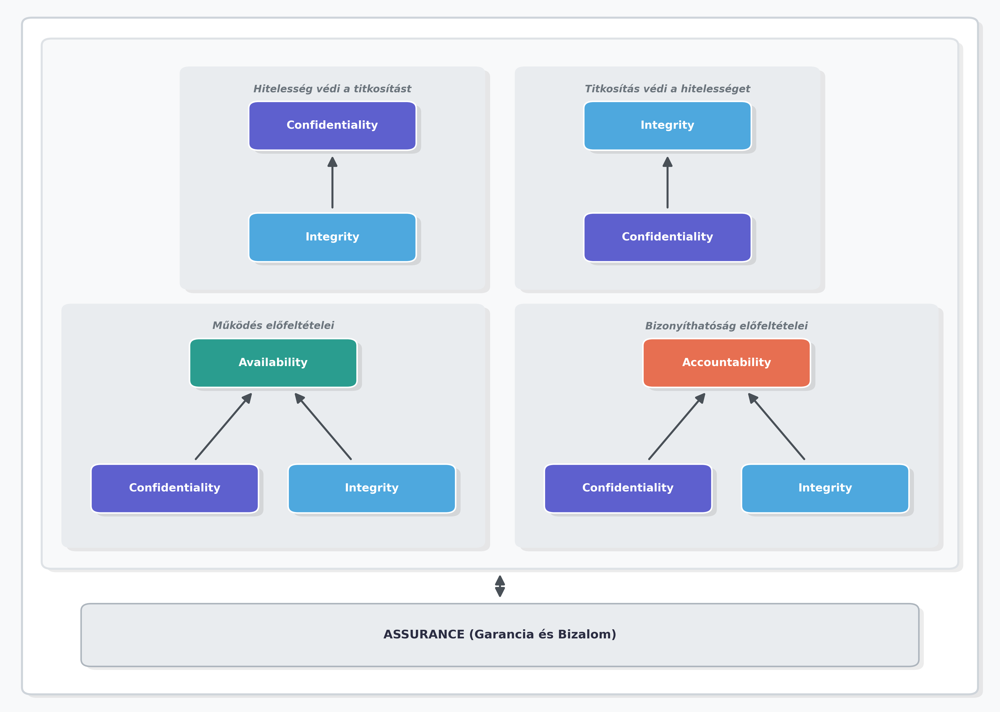
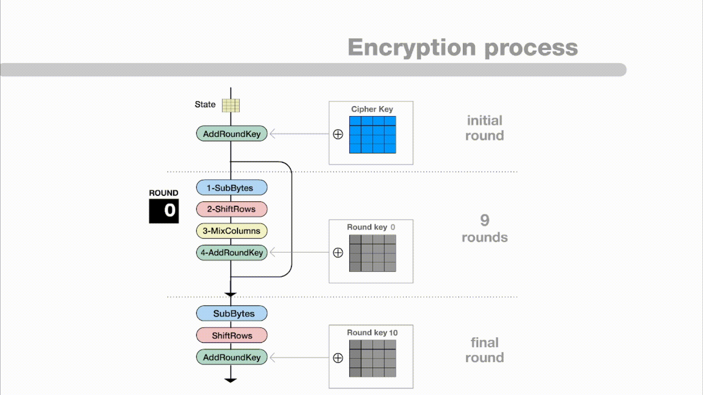

8.1. Statisztikai minta és becslések, átlag és szórás. Konfidenciaintervallumok. Az u-próba.
Statisztikai minta
Alapelv: A matematikai statisztika szemléletmódja szerint a megfigyelhető mennyiség valószínűségi változó. Jelöljük ezt X-szel.
Definíció: Ha X egy valószínűségi változó, akkor X-re vett minta alatt X-szel azonos eloszlású, független X1,X2,…,Xn valószínűségi változókat értjük.
Például: Ha meg akarjuk vizsgálni egy gyárban készült csavarok hosszát, a vizsgált X mennyiség a csavar hossza. Ha kiválasztunk 5 csavart, az elméleti X1,…,X5 változók magát a mintát alkotják, még mielőtt a konkrét méréseket elvégeznénk.
Jellemzői:
az Xi változók megfigyelése n-szer, egymástól teljesen függetlenül történik
az Xi változók eloszlása megegyezik az alapul szolgáló X eloszlásával
a minta elméleti fogalom, amely az összes lehetséges realizációt magában foglalja
Minta realizáció
Definíció: Rögzített ω∈Ω (elemi esemény) esetén a mintát alkotó valószínűségi változók által felvett konkrét értékeket, azaz az x1=X1(ω),x2=X2(ω),…,xn=Xn(ω) szám n-est minta realizációnak nevezzük.
Például: Ha az előző csavaros példában ténylegesen lemérjük az 5 kiválasztott csavart, és a kapott eredmények milliméterben: x1=10.1x2=9.9x3=10.0x4=10.2x5=9.8
Ez a konkrét számötös egy minta realizáció.
Jellemzői:
a gyakorlatban mindig csak minta realizációkat (konkrét számadatokat) figyelünk meg
a megfigyelési eredmények (realizációk) megfigyeléssorozatonként (kísérletenként) különböznek
jelölése: a nagybetűk (Xi) a valószínűségi változókat (a mintát), míg a kisbetűk (xi) a konkrét felvett értékeket (a realizációt) jelölik
Mintaátlag (Empirikus közép)
Definíció: Legyen X1,…,Xn egy X-re vett statisztikai minta. Az alábbi valószínűségi változót empirikus középnek, más néven mintaátlagnak nevezzük: Xˉ=n1i=1∑nXi=nX1+X2+⋯+Xn
Jelentése: Tegyük fel, hogy az X valószínűségi változónak létezik várható értéke (m=EX). Amennyiben ez az elméleti várható érték a gyakorlatban nem ismert, úgy a minta alapján meghatározott Xˉ mintaátlag segítségével következtethetünk rá (azaz becsülhetjük azt).
Jellemzői:
Várható értéke: A mintaátlag várható értéke pontosan megegyezik az eredeti változó elméleti várható értékével (m). EXˉ=n1i=1∑nEXi=m
Szórásnégyzete: A mintaátlag szórásnégyzete az eredeti változó elméleti szórásnégyzetének (jelöljük σ2=D2X-szel) az n-ed része. Ahogy a mintaelemszám (n) nő, a mintaátlag szórása úgy csökken. D2Xˉ=n21i=1∑nD2Xi=nσ2
Empirikus szórásnégyzet (Mintaszórásnégyzet)
Definíció: Legyen X1,…,Xn egy statisztikai minta, és Xˉ a mintaátlag. Az alábbi valószínűségi változót empirikus szórásnégyzetnek nevezzük: sn2=n1i=1∑n(Xi−Xˉ)2
Jelentése: Ennek a statisztikának a segítségével következtethetünk az eredeti X valószínűségi változó elméleti szórásnégyzetére (σ2), amennyiben az a gyakorlatban nem ismert.
Korrigált empirikus szórásnégyzet
Definíció: Az elméleti szórásnégyzet pontosabb közelítésére (becslésére) egy módosított képletet, a korrigált empirikus szórásnégyzetet használjuk, ahol az osztó n helyett n−1: sn∗2=n−11i=1∑n(Xi−Xˉ)2
Jellemzői:
Várható értéke: A korrigált empirikus szórásnégyzet várható értéke pontosan megegyezik az elméleti szórásnégyzettel (Esn∗2=σ2). Éppen ezért ez a formula sokkal alkalmasabb a szórásnégyzet becslésére, mint a sima empirikus szórásnégyzet.
A gyakorlatban, ha statisztikai szoftverekkel "mintaszórást" számolunk, szinte mindig ezt a korrigált, n−1-gyel osztó képletet alkalmazzák.
Steiner-formula
Definíció: Az empirikus szórásnégyzet numerikus kiszámolását (a kézi vagy gépi számolás egyszerűsítését) és az elméleti vizsgálatokat megkönnyítő azonosság a Steiner-formula: n⋅sn2=i=1∑n(Xi−a)2−n(Xˉ−a)2
ahol a egy tetszőleges valós szám.
Jellemzői:
Ha a képletbe az a helyére az m-et (az elméleti várható értéket) helyettesítjük, akkor ennek segítségével viszonylag egyszerűen kiszámíthatjuk és bizonyíthatjuk, hogy a korrigált empirikus szórásnégyzet várható értéke valóban az elméleti szórásnégyzet lesz.
Statisztikai becslések
A statisztikában a "becslés" azt jelenti, hogy a gyakorlatban megfigyelt minta alapján történik kísérlet a teljes sokaság egy ismeretlen, elméleti paraméterének (például a valódi átlagnak vagy a szórásnak) a meghatározására. A becslések jóságát különböző tulajdonságokkal mérik.
1. Torzítatlan becslés
Definíció: Egy T statisztikát (kiszámolt értéket) az ismeretlen t paraméter torzítatlan becslésének nevezünk, ha a várható értéke megegyezik a becsülni kívánt paraméterrel: ET=t
Szemléletes jelentése: Ha a kísérletet (a mintavételt) végtelen sokszor megismételnék, és minden alkalommal kiszámítanák a becslést, akkor ezeknek a becsléseknek az átlaga hajszálpontosan kiadná a valódi, keresett értéket. A becslés nem "húz" szisztematikusan sem felfelé, sem lefelé; a valódi érték körül ingadozik.
Például: Egy klasszikus példa a céllövő esete, aki a céltábla közepét (a t paramétert) célozza. Bár nem találja el mindig pontosan a közepét, a lövései szimmetrikusan szóródnak a középpont körül. A statisztikában jó példa erre a mintaátlag (Xˉ), ami a valódi várható érték (m) torzítatlan becslése, mert EXˉ=m.
2. Konzisztens (Erősen konzisztens) becslés
Definíció: Egy Tn (az n mintaelemszámtól függő) becsléssorozatot a t paraméter konzisztens becslésének nevezünk, ha a mintaelemszám növekedésével a becslés (sztochasztikusan) tart a valódi paraméterhez: Tn→t.
Szemléletes jelentése: Ahogy egyre több adat áll rendelkezésre (az n egyre nagyobb lesz), a becslés egyre pontosabbá válik, és "rásimul" a valódi értékre. Ha végtelen sok adat állna rendelkezésre, a becslés tévedése nullára csökkenne.
Például: Egy aszimmetrikus (cinkelt) érme esetén az a cél, hogy kiderüljön, milyen eséllyel esik a fejre (ez az ismeretlen t). Ha csak 3 dobás történik, és abból 2 fej, a becslés 2/3≈66%. Ha azonban 10 000 dobásból 7 450 a fej, a becslés 74.5%. Minél több a megfigyelés (a dobások száma), a relatív gyakoriság annál jobban megközelíti a valódi, elméleti valószínűséget.
Maximum-Likelihood becslés (MLE)
Alapelv: Ez egy statisztikai módszer a "legjobb" becslés megtalálására. Azt a "visszafelé" gondolkodást alkalmazza, hogy: Adott egy konkrét, már megfigyelt minta. Milyen elméleti paraméter (pl. várható érték) mellett lenne a LEGNAGYOBB az esélye annak, hogy pont ez a minta adódjon kimenetelként?
A Maximum Likelihood nem más, mint a legjobban illeszkedő elméleti modell megkeresése a már meglévő tényekhez.
A logaritmikus trükk (számítási mód):
A számításhoz felírják az úgynevezett Likelihood-függvényt (jelölése: L), ami megadja a minta valószínűségét a keresett paraméter (jelöljük ϑ-val) függvényében. A cél az L függvény csúcsának (maximumának) megtalálása ϑ szerint.
Mivel a valószínűségek (vagy sűrűségfüggvény-értékek) szorzásával számolni nehéz (és deriválni is bonyolult), a gyakorlatban egy matematikai trükköt alkalmaznak: veszik a függvény természetes alapú logaritmusát (l=lnL). Mivel a logaritmus függvény folyamatosan növekvő (szigorúan monoton), ahol az eredeti L függvénynek maximuma van, pontosan ugyanott lesz az l (log-likelihood) függvénynek is a maximuma. Így elegendő az l maximumhelyét meghatározni.
Szemléletes példa (Haranggörbe illesztése):
Adott egy megfigyeléssorozat (például 5 mért testmagasság adat), de a teljes vizsgált sokaság várható értéke (μ) ismeretlen. A becslés elvégzése során egy normál eloszlás haranggörbéjének helyzetét (a μ paramétert) változtatják az adatpontok felett. A Likelihood (illeszkedés jósága) annál nagyobb, minél magasabb sűrűségértékeket vesz fel a görbe a megfigyelt pontoknál. Az eljárás végén azt a μ értéket fogadják el a sokaság becsült várható értékének, ahol ez az együttes sűrűség (a Likelihood függvény) eléri a maximumát.
Alapelv: A pontbecslések (amikor egyetlen számot adunk meg becslésként) hátránya, hogy szinte biztosan nem találják el hajszálpontosan a valódi, ismeretlen paramétert. Ehelyett a statisztika egy intervallumot határoz meg, és ahhoz rendel egy valószínűséget.
Definíció: Legyen ϑ egy ismeretlen elméleti paraméter. Legyen T1 és T2 a megfigyelt mintából kiszámított két statisztika (az alsó és felső határ). Azt mondjuk, hogy a [T1,T2] intervallum egy 1−α megbízhatósági szintű konfidencia intervallum a ϑ paraméterre, ha igaz a következő összefüggés: P(T1≤ϑ≤T2)≥1−α
Szemléletes jelentése (A halászháló analógia):
Képzeljük el, hogy a tenger fenekén van egy kincsesláda (ez az ismeretlen ϑ paraméter). A láda fix, nem mozog. A statisztikai mintavétel olyan, mintha a hajóról ledobnánk egy halászhálót (ez az intervallum: [T1,T2]), abban a reményben, hogy a háló ráesik a ládára.
Az α a hiba esélye (általában 0.05, azaz 5%).
Az 1−α a megbízhatósági szint (általában 0.95, azaz 95%).
Ha a kísérletet végtelen sokszor megismételnénk (végtelen sok hálót dobnánk le azonos módszerrel), akkor a kiszámított intervallumok (hálók) 95%-a sikeresen magában foglalná a valódi, fix paramétert (a ládát), és 5%-uk teljesen mellémenne.
Az intervallum szélessége és a bizonytalanság:
A konfidencia intervallum szélessége a becslés bizonytalanságát méri.
Széles intervallum: Nagyobb biztonsággal tartalmazza a paramétert (széles háló), de kevésbé informatív (nem tudjuk pontosan, hol a láda).
Keskeny intervallum: Nagyon pontos információt ad, de nagyobb az esélye, hogy tévedünk (kicsi a háló).
A mintaelemszám (n) növelésével az intervallum általában szűkül, azaz a becslés pontosabbá válik anélkül, hogy a megbízhatóság csökkenne.
Gyakorlati példa: Minőségellenőrzés a gyártásban
A probléma felvetése
Egy gyár új típusú LED izzókat gyárt. A menedzsment tudni szeretné, hogy a legyártott izzók teljes sokaságának (több millió darabnak) mennyi a tényleges, elméleti átlagos élettartama (ez a keresett, ismeretlen ϑ paraméter).
1. A mintavétel
Mivel lehetetlen minden egyes izzót tönkremenetelig tesztelni, a minőségellenőrök véletlenszerűen kiválasztanak n=100 darab izzót a futószalagról. A tesztelés végén kiszámolják a megfigyelt élettartamok mintaátlagát, ami Xˉ=1500 óra lett. (Tegyük fel, hogy a korábbi gyártási tapasztalatok alapján ismert, hogy a szórás σ=120 óra).
2. A hibahatár kiszámítása
A gyár egy 95%-os megbízhatósági szintű (1−α=0.95) konfidencia intervallumot szeretne. A statisztika matematikai elmélete (a normális eloszlás táblázata) alapján a 95%-os megbízhatósághoz egy szorzószám (ún. z-érték) tartozik, ami megközelítőleg 1.96.
Az intervallum sugarát (a statisztikai hibahatárt) az alábbi képlettel kapjuk meg: Hibahataˊr=z⋅nσ=1.96⋅100120=1.96⋅10120=1.96⋅12=23.52oˊra
3. Az intervallum felírása és értelmezése
A konfidencia intervallum alsó és felső határa a mintaátlag ± a kiszámolt hibahatár: [1500−23.52,1500+23.52]=[1476.48,1523.52]
Hogyan értelmezzük ezt az eredményt?
A gyár vezetősége 95%-os magabiztossággal állíthatja, hogy az összes legyártott és a jövőben legyártandó izzó valódi átlagos élettartama 1476.5 óra és 1523.5 óra közé esik. Bár a konkrét 1500 órás pontbecslés szinte biztosan nem egyezik meg hajszálpontosan a valódi átlaggal, ez az intervallum már elég szűk és megbízható ahhoz, hogy a dobozra nyugodt szívvel ráírhassanak egy 1450 órás élettartam-garanciát.
Mi történne, ha megváltoztatnánk a feltételeket?
Nagyobb megbízhatóság: Ha a gyár 99%-ig biztos akarna lenni a dolgában, a "halászhálót" szélesebbre kellene húzni. A képletben lévő z-érték megnőne, ezáltal a hibahatár nagyobb lenne (pl. ±31 óra). Az intervallum kiszélesedne.
Több tesztelt izzó (Nagyobb minta): Ha az ellenőrök 100 helyett 400 izzót tesztelnének le (n=400), akkor a n osztó kétszeresére nőne (10 helyett 20 lenne). Ez a hibahatárt kapásból a felére (kb. ±11.76 órára) csökkentené. Az intervallum szűkülne, a becslés sokkal pontosabbá válna, miközben a 95%-os megbízhatóság továbbra is megmarad.
Hipotézisvizsgálat: Az u-próba (Egymintás z-próba)
Alapelv: A hipotézisvizsgálat a statisztika "bírósági tárgyalása". Van egy feltételezésünk a világ működéséről (például, hogy a gép jól van beállítva), és a megfigyelt minta (bizonyítékok) alapján döntjük el, hogy ezt a feltételezést elvetjük-e vagy sem. Az u-próba a legegyszerűbb paraméteres próba, amit akkor használunk, ha egy sokaság várható értékét (m) vizsgáljuk, és a sokaság szórása (σ) előre ismert.
Definíció és Hipotézisek:
Tegyük fel, hogy X1,…,Xn egy normális eloszlású minta, ismert σ szórással. A vizsgált elméleti paraméter a várható érték (m). A meglévő, elvárt érték legyen m0.
Nullhipotézis (H0): m=m0 (Nincs változás, a gép jól működik, az elmélet igaz).
Ellenhipotézis (H1): m=m0 (Valami megváltozott, az elmélet nem igaz. Ezt nevezzük kétoldali ellenhipotézisnek).
A próbastatisztika (u):
Ha a nullhipotézis igaz (tehát tényleg m=m0), akkor a megfigyelt mintaátlagból (Xˉ) képzett alábbi statisztika pontosan standard normális eloszlású (N(0,1)) lesz: u=σXˉ−m0n
A döntés logikája (Elfogadó és Kritikus tartomány):
Mivel tudjuk, hogy H0 esetén az u értéke standard normális eloszlást követ, felrajzolhatunk egy haranggörbét (ahol a nulla van középen).
Rögzítünk egy hiba-esélyt (ezt hívják szignifikanciaszintnek, jelölése α, általában 0.05 vagy 5%). Ekkora eséllyel fogjuk véletlenül elvetni a jó H0-t (elsőfajú hiba).
Ebből az α-ból a statisztikai táblázat segítségével meghatározunk egy határértéket (uα/2). Ezzel a határértékkel a haranggörbét három részre vágjuk:
Elfogadó tartomány[−uα/2,uα/2]: Ha a kiszámolt u ide esik (a nulla közelébe), akkor a minta nem mond ellent a nullhipotézisnek. H0-t megtartjuk.
Kritikus (elvetési) tartomány: Ha az u kilóg ebből a sávból (akár jobbra, akár balra), az azt jelenti, hogy nagyon valószínűtlen, hogy ez a minta egy m0 várható értékű sokaságból származzon. H0-t elvetjük H1 javára.
A hipotézisvizsgálat 4 lépése a gyakorlatban
Hipotézisek felállítása: Megfogalmazzuk H0-t (pl. az átlag 500) és H1-et (pl. az átlag nem 500), valamint rögzítjük az α szignifikanciaszintet (pl. 0.05).
Kritikus tartomány meghatározása: Az α alapján kikeressük a táblázatból a határt jelentő uα/2 értéket (0.05 esetén ez ≈1.96). Ezzel kijelöljük, hogy hol húzódik a határ az elfogadás és elvetés között.
Próbastatisztika kiszámítása: A kapott konkrét minta realizációból (a mérésekből) kiszámoljuk az Xˉ mintaátlagot, majd behelyettesítünk az u képletébe.
Döntés: Megnézzük, hová esik az u érték. Ha benne van az elfogadó tartományban (a határok között), akkor nincs okunk elvetni H0-t. Ha kilóg, elvetjük H0-t (1−α) megbízhatósággal.
Gyakorlati példa: Minőségellenőrzés a pékségben (u-próba)
A probléma felvetése
Képzeljünk el egy pékséget, ahol egy automata gép elméletileg pontosan 500 grammos kenyereket süt. A korábbi minőségellenőrzésekből ismert, hogy a gép működésének szórása σ=10 gramm. Egy ellenőr arra gyanakszik, hogy a gép elállítódott, ezért lemér n=25 véletlenszerűen kiválasztott kenyeret. A mérések átlaga Xˉ=505 gramm lett.
Vajon elromlott a gép, vagy ez az 5 grammos eltérés még az elfogadható véletlen ingadozás része?
1. Hipotézisek és szignifikanciaszint felállítása
Nullhipotézis (H0): m=500 (A gép jól van beállítva, a kenyerek valódi átlaga 500g).
Ellenhipotézis (H1): m=500 (A gép elállítódott, a valódi átlag nem 500g).
Szignifikanciaszint (α): Legyen 0.05 (azaz 95%-os megbízhatósággal hozunk döntést).
2. A kritikus tartomány meghatározása
Mivel a szórás ismert, u-próbát végzünk. A standard normális eloszlás táblázatából kinézzük az α=0.05-höz tartozó (kétoldali) határértéket, ami uα/2=1.96.
Elfogadó tartomány: [−1.96,1.96]
Kritikus tartomány: Minden, ami ezen kívül esik (−1.96-nál kisebb, vagy 1.96-nál nagyobb értékek).
3. A próbastatisztika (u) kiszámítása
A képletbe behelyettesítjük a megfigyelt adatokat (Xˉ=505, m0=500, σ=10, n=25): u=σXˉ−m0n=10505−50025=105⋅5=0.5⋅5=2.5
4. Döntés és értelmezés
Megvizsgáljuk a kiszámolt próbastatisztikát: a 2.5nem esik bele a [−1.96,1.96] elfogadó tartományba, annál nagyobb, tehát a kritikus tartományban van.
Statisztikai döntés: A nullhipotézist (H0) 5%-os szignifikanciaszinten elvetjük az ellenhipotézissel (H1) szemben.
Gyakorlati jelentés: Az ellenőr 95%-ig biztos lehet benne, hogy a gép valóban elállítódott, és szignifikánsan túlsúlyos kenyereket gyárt. A tapasztalt 5 grammos eltérés túl nagy ahhoz, hogy puszta véletlen legyen (ennek esélye kisebb, mint 5%).
A t-próba (Amikor a szórás ismeretlen)
A valós életben szinte sosem ismerjük a teljes sokaság pontos σ szórását (ha a várható értéket nem ismerjük, a szórást miért ismernénk?). Ilyenkor az u-próba nem használható. Helyette a t-próbát (egymintás t-próba) alkalmazzuk.
A különbség:
Az elméleti, ismert σ helyett a mintából kiszámolt korrigált empirikus szórást (sn∗) kell használnunk a képletben.
Mivel a szórás becslése egy újabb bizonytalanságot visz a rendszerbe, a próbastatisztika (amit itt t-nek hívunk) már nem lesz szép standard normális eloszlású. Helyette úgynevezett Student-féle t-eloszlást fog követni (amelynek a paramétere a szabadságfok: f=n−1).
A számolás és a döntés lépései teljesen megegyeznek, csak az u-táblázat helyett a t-táblázatból nézzük ki a határértékeket.
t=sn∗Xˉ−m0n
8.2. Az informatikai biztonság fogalma, legfontosabb biztonsági célok. Fizikai védelem, kártékony programok, osztályozásuk terjedési módjuk és büntető rutinjuk szerint. Algoritmikus védelem eszközei: titkosítás, digitális aláírás, hash függvények. Az AES és RSA algoritmusok.
Az informatikai biztonság fogalma
Definíció: Az informatikai biztonság egy informatikai rendszer olyan állapota, amelyben a kezelt adatok bizalmassága, sértetlensége és rendelkezésre állása biztosított. Emellett magának a rendszernek (hardver, szoftver, hálózat) a sértetlensége és rendelkezésre állása szempontjából a védelem megfelel az alábbi négy alapelvnek:
Zárt védelem: A védelem az összes releváns (számításba vehető) fenyegetést figyelembe veszi, nincsenek "elfelejtett" kiskapuk.
Teljeskörű védelem: A védelmi intézkedések a rendszer minden elemére (szerverek, kliensgépek, hálózat, fizikai beléptetés, sőt maguk az alkalmazottak) kiterjednek.
Folytonos védelem: Az időben változó körülmények (pl. éjszaka, hétvége, áramszünet, rendszerfrissítés) nem okozhatnak kiesést a védelemben.
Kockázatokkal arányos: A védelemre szánt költség és erőforrás egyenesen arányos a megvédendő adat értékével és a potenciális kárértékkel. (Például: egy diákjegyzeteket tároló szerverre nem veszünk 10 millió forintos tűzfalat, de egy banki adatbázisra igen).
Fogalmi elhatárolások
Információbiztonság: Mindenféle információ védelmére vonatkozik, függetlenül a hordozó médiumtól. Ide tartozik az informatikai védelem is, de ugyanígy a papíralapú szerződések páncélszekrényben tartása, vagy az is, hogy a cégvezetők nem beszélnek titkos projektekről egy nyilvános kávézóban.
Informatikai biztonság: Az információbiztonság része, szigorúan a számítógépes rendszerekben feldolgozott, tárolt és továbbított adatok, illetve maguknak a rendszereknek a védelme.
Adatbiztonság: Az informatikai biztonság része. Konkrét műszaki és szervezési intézkedések összessége, amelyek meggátolják az adatok jogosulatlan megszerzését, módosítását vagy megsemmisülését (pl. titkosítás, jelszavak, biztonsági mentések).
Adatvédelem: A személyes adatok jogszerű kezelését, az érintettek jogainak érvényesülését jelenti (pl. GDPR). Nem technikai, hanem jogi kategória. (Példa: Ha egy cég titkosítva tárolja a vásárlói adatokat, az adatbiztonságilag kiváló. De ha ezeket az adatokat a felhasználó beleegyezése nélkül eladja egy reklámügynökségnek, akkor súlyosan megsérti az adatvédelmet).
A legfontosabb biztonsági célok: A CIA + AA modell
A modern információbiztonság erre az 5 alappillérre épül:
Confidentiality (Bizalmasság)
A titkos vagy személyes információkhoz, erőforrásokhoz csak az arra jogosultak férhetnek hozzá. Ezt az adatok tárolásánál, feldolgozásánál és továbbításánál is biztosítani kell.
Példa: Amikor bejelentkezünk egy netbankba, a hálózati forgalom titkosítva van (HTTPS/TLS), így a wifit lehallgató hacker nem látja a jelszavadat vagy az egyenlegedet.
Integrity (Sértetlenség)
Két ága van, mindkettő azt garantálja, hogy a dolgok "eredetiek" és "hibátlanok" maradnak:
Adatintegritás: Az adat nem módosul, nem sérül és nem semmisül meg sem a tárolás, sem a továbbítás során. (Példa: Utalunk 10 000 Ft-ot, és a banki rendszerben nem változik át az összeg véletlenül 100 000 Ft-ra hálózati hiba vagy hackertámadás miatt).
Rendszerintegritás: A rendszer pontosan az elvártak és a specifikációk szerint működik, mentes a jogosulatlan (például kártékony kódok, trójai vírusok általi) módosításoktól.
Availability (Rendelkezésre állás)
A szolgáltatás (és a benne lévő adat) a jogosultak számára a szükséges időben és a szükséges ideig mindig használható és elérhető.
Példa: Egy webáruház szerverei Black Friday alatt sem omlanak össze a terheléstől (vagy egy DDoS támadástól), így a vásárlók tudnak rendelést leadni. Ennek biztosítására használnak pl. redundáns (többszörözött) szervereket.
A rendszerben végzett minden releváns tevékenység egyértelműen visszakövethető egy konkrét felhasználóhoz vagy folyamathoz.
Példa: Ha egy banki alkalmazott jogosulatlanul lekérdezi egy híres ember számlaadatait, a rendszer naplófájljai megmásíthatatlanul rögzítik, hogy az ő azonosítójával, pontosan mikor, melyik gépről történt a lekérdezés. Így utólag nem tagadhatja le a tettét.
Assurance (Biztosíték / Garancia)
A megrendelő/felhasználó megalapozott bizalma abban, hogy a rendszer védelmi mechanizmusai valóban úgy és ott működnek, ahogy azt tervezték, és képesek teljesíteni a fenti 4 célt.
Példa: A cég nem csak "bemondásra" állítja, hogy biztonságos, hanem független kiberbiztonsági cégekkel auditáltatja magát, behatolásvizsgálatot (etikus hackelést) végeztet, vagy megszerzi az ISO 27001-es információbiztonsági tanúsítványt.
Kapcsolat a célok között

Sérülési szintek
A biztonsági incidensek hatásait általában három fő kategóriába soroljuk:
1. Alacsony szintű sérülés
Hatás: Korlátozott, lokális vagy kisebb fennakadást okozó hatás.
Működés: A szervezet képes a legfőbb feladatait továbbra is végrehajtani, a kritikus üzleti folyamatok nem állnak le.
Kár: Csak minimális anyagi kár keletkezik, a bevételkiesés elhanyagolható vagy tárgytalan. Az esetleges személyi sérülés vagy hírnévvesztés minimális.
Példa: Egy cég belső, ritkán használt dokumentummegosztó szervere leáll 2 órára. A dolgozók addig e-mailben küldik át az anyagokat egymásnak. A kár csekély, a cég külső működése zavartalan marad.
2. Közepes szintű sérülés
Hatás: Komoly, jól érezhető negatív hatás.
Működés: A szervezet még képes ellátni az alapvető feladatait, de a hatásfoka (hatékonysága) jelentősen csökken. A folyamatok lelassulnak, esetleg alternatív (például papíralapú vagy manuális) megoldásokra kell ideiglenesen átállni.
Kár: Jelentős anyagi kár és mérhető bevételcsökkenés jelentkezik. A cég hírneve rövid távon csorbulhat, komolyabb partneri reklamációk érkezhetnek.
Példa: Egy webáruház bankkártyás fizetési rendszere leáll egy fél napra. A vásárlók csak utánvéttel tudnak rendelni. A cég elesik a megrendelések egy részétől, az ügyfélszolgálat túlterhelődik, de a cég alapvetően túléli a hibát.
3. Magas szintű sérülés
Hatás: Végzetes, kritikus, katasztrofális hatás.
Működés: A szervezet nem képes ellátni a legfőbb feladatait. Az alapvető üzleti vagy szolgáltatási funkciók teljesen megbénulnak.
Kár: Katasztrofális anyagi kár, amely akár a cég csődjéhez vagy megszűnéséhez is vezethet. Súlyos jogi és büntetőjogi következmények, helyrehozhatatlan hírnévvesztés, vagy ami a legrosszabb: a személyi biztonság (élet, testi épség) súlyos veszélyeztetése.
Példa: Egy kórház teljes informatikai hálózatát megbénítja egy zsarolóvírus, a biztonsági mentéseket is letörlik. Az orvosok nem férnek hozzá a betegek leleteihez, a gépek leállnak, a műtéteket el kell halasztani. A szervezet alapfunkciója leáll, ami emberéleteket sodor közvetlen veszélybe.
Fizikai védelem
Alapelv: A fizikai védelem feladata az informatikai rendszereket kiszolgáló fizikai erőforrások és a teljes infrastruktúra megóvása a fizikai térben történő károkozástól.
A védelmi intézkedések céljuk szerint két fő csoportba sorolhatók:
Preventív (megelőző): Célja a kár bekövetkezésének megakadályozása (pl. masszív zárak).
Detektív (észlelő): Célja a már bekövetkezett, vagy épp zajló esemény azonnali észlelése és riasztás küldése (pl. mozgásérzékelő).
A védendő fizikai infrastruktúra elemei
A védelemnek az alábbi négy pillérre egyaránt ki kell terjednie:
Informatikai hardver: Szerverek, kliensgépek, hálózati eszközök (routerek, switchek), adathordozók.
Épületek: Maga az irodaház, a szerverterem és az azt védő falak, nyílászárók.
Személyzet: Az üzemeltető és felhasználó emberek testi épségének és biztonságának garantálása (ez mindig a legmagasabb prioritás).
Fenyegetések kategóriái
A fizikai rendszereket érő támadások és veszélyek három fő forrásból érkezhetnek:
Környezeti / Természeti csapások: Tornádó, ciklon, földrengés, vihar, villámcsapás vagy árvíz. (Ezek ellen a megfelelő építészeti tervezéssel és helyszínválasztással lehet védekezni).
Technikai fenyegetések: Feszültséghiány (áramszünet), túlfeszültség (ami kiégetheti a hardvereket), elektromágneses interferencia (EMI - ami megzavarhatja a hálózati kommunikációt vagy az adathordozókat).
Emberi fenyegetések: Jogosulatlan fizikai hozzáférés (betörés, eszközök ellopása), szándékos szabotázs, vagy a személyzet véletlen hibája (pl. egy kritikus kábel véletlen kihúzása).
Tipikus védelmi intézkedések (Kontrollok)
A fenti fenyegetések ellen az alábbi konkrét megoldásokat alkalmazzák:
Preventív (Megelőző) kontrollok:
UPS (Szünetmentes tápegység): Technikai fenyegetések ellen véd; áramszünet vagy feszültségingadozás esetén is folyamatos áramot biztosít a szervereknek.
Felhőhasználat és Backup (Biztonsági mentés): Katasztrófa (pl. az épület leégése) esetén garantálja, hogy az adatok fizikailag máshol is meglegyenek, így megelőzi a végleges adatvesztést.
Beléptetőrendszerek: Kártyás vagy kódos zárak az emberi behatolás megelőzésére.
Detektív (Észlelő) kontrollok:
Környezeti szenzorok: Tűz-, víz- és porérzékelők, amelyek azonnal riasztanak (és esetleg elindítják az oltórendszert), ha baj van a szerverteremben.
Kártékony programok osztályozása terjedési mód szerint
Vírus (Terjedés fertőzött fájl futtatásával)
Alapelv: A vírus egy olyan kártékony kód, amely önmagában nem életképes; szüksége van egy "gazdaprogramra" (egy végrehajtható fájlra vagy dokumentumra), amit megfertőz. Terjedéséhez és aktiválódásához elengedhetetlen a felhasználói interakció (pl. a fájl megnyitása, futtatása).
Gyakori hordozók: szkript kódokat tartalmazó dokumentumok (MS Office fájlok, Adobe PDF-ek).
A vírus 3 fő logikai része:
Fertőző mechanizmus (Infection vector): Az a módszer, ahogyan a vírus terjed és sokszorosítja önmagát más fájlokba.
Indíték / Aktivátor (Trigger): Egy logikai feltétel vagy esemény (pl. egy adott dátum, vagy egy program 10. elindítása), amely meghatározza, hogy mikor induljon el a kártékony folyamat (ezt logikai bombának is hívják).
Büntető rutin (Payload): Maga a kárt okozó tevékenység (pl. fájlok törlése, adatok titkosítása, rendszer lassítása).
Vírusok csoportosítása célpont szerint:
Boot vírusok: A háttértárak (merevlemez, pendrive) indító (boot) szektorába ágyazódnak be. Még az operációs rendszer betöltődése előtt aktiválódnak, és minden csatlakoztatott háttértárat megfertőznek.
Alkalmazásvírusok: Betöltődnek a memóriába, és megfertőzik a futó programokat. Típusai a hozzáfűző (append) és a felülíró (replace) vírusok.
Makróvírusok: Olyan dokumentumszerkesztőket támadnak, amelyek támogatják a makrókat (pl. Word, Excel). Terjedésükhöz elég megnyitni a fertőzött dokumentumot (ide tartoznak a levelező vírusok is).
Összetett vírusok: Többféle célpontot is képesek egyszerre támadni (pl. alkalmazásokat és a boot szektort is).
Vírusok rejtőzködési stratégiái:
Titkosított vírus: Titkosítja a saját kódját, hogy a vírusirtók ne ismerjék fel a szignatúráját.
Lopakodó vírus: A memóriában maradva kicselezi az operációs rendszert és az antivírus szoftvereket. Képes meghamisítani a fájlméreteket vagy a könyvtárstruktúrát. Szorosan ide kötődnek a Rootkitek, amelyek a legmagasabb (root/adminisztrátor) jogosultság megszerzése után rejtik el a kártékony folyamatokat.
Polimorf vírus: Minden egyes fertőzési ciklusban (másolódáskor) megváltoztatja a megjelenési formáját, így a hagyományos vírusirtóknak nagyon nehéz felismerni. Egy mutációs motor felel a kulcsgenerálásért és a titkosításért.
Metamorf vírus: A legfejlettebb típus; terjedéskor nem csak titkosít, hanem a saját forráskódját minden alkalommal teljesen újraírja és átstrukturálja, miközben a funkciója ugyanaz marad.
Féreg (Terjedés sebezhetőségek kihasználásával)
Alapelv: A féreg a vírussal ellentétben önálló program. Nem igényel gazdafájlt, és (gyakran) felhasználói interakciót sem. Kliens- és szerveroldali sérülékenységeket kihasználva, a számítógép-hálózatokon keresztül terjed, önmagát lemásolva a távoli rendszerekre.
Hálózati célpont-keresési stratégiák (Hogyan talál új áldozatot?):
Véletlen (Random): Véletlenszerű IP-címeket generál és próbál megfertőzni. Hátránya a támadó szempontjából, hogy hatalmas és feltűnő hálózati forgalmat generál.
Hit-lista: A féreg indulása előtt a támadó összegyűjti a sebezhető gépek listáját. A féreg ezeken fut végig, a megfertőzött gépek pedig azonnal bekapcsolódnak a további keresésbe. Nagyon gyors és nehezen észrevehető indulást tesz lehetővé.
Topológia: A már megfertőzött gép helyi információi (pl. hálózati kapcsolatok, címjegyzék) alapján keresi a következő célpontokat.
Helyi alhálózat: Ha a féreg bejutott egy belső (tűzfal mögötti) hálózatba, akkor az adott alhálózat címstruktúráját használva fertőz meg további, tűzfal mögötti gépeket.
A modern férgek jellemzői:
Multiplatform: Többféle operációs rendszert (Windows, Linux, macOS) és környezetet képesek támadni.
Multikihasználás: Egyszerre többféle behatolási módszert és sérülékenységet próbálnak ki.
Ultragyors terjedés: Képesek perceken belül globális hálózatokat megfertőzni.
Polimorf/Metamorf: A vírusokhoz hasonlóan képesek alakot váltani.
Szállítóeszköz funkció: Gyakran csak a behatolást végzik el, majd "letöltik" a tényleges büntető rutint (ami lehet egy zsarolóvírus, DDoS botnet kliens, kémprogram vagy rootkit).
Nulladik napi támadás: Olyan vadonatúj szoftverhibákat (sebezhetőségeket) használnak ki, amelyeket a szoftver gyártója még nem is ismer, így nincs is rájuk javítás (patch).
Kliens oldali sebezhetőségek
Ezek a módszerek gyakran szolgálnak a férgek és trójai programok bejutási pontjául:
Drive-by-downloads: A felhasználó tudta és beleegyezése nélküli, csendes letöltés és telepítés. Elég egy kártékony weboldalt (vagy egy feltört, legális weboldalt) meglátogatni, és a böngésző sebezhetőségét kihasználva a malware a háttérben azonnal települ.
Malvertising: Kártékony hirdetések elhelyezése legális weboldalakon. A hirdetésre kattintva (vagy sokszor akár kattintás nélkül is, csak a hirdetés betöltődésével) lefut a kártékony kód.
Szoftver-bugok kihasználása: E-mail kliensek vagy PDF olvasók sebezhetőségeinek kiaknázása (pl. egy speciálisan szerkesztett PDF, ami megnyitáskor kódot futtat a memóriában).
Clickjacking: Egy rosszindulatú technika, ahol a weblapon a gombok vagy linkek fölé láthatatlan rétegeket tesznek. A felhasználó azt hiszi, hogy egy videót indít el, de valójában egy rejtett gombra kattint (ami pl. letölt egy malware-t vagy elindít egy tranzakciót).
Pszichológiai manipuláció (Social Engineering)
A kártékony kódok terjesztésének leggyakoribb módja ma már nem a szoftveres sebezhetőségek keresése, hanem az emberi hiszékenység és figyelmetlenség kihasználása.
Adathalászat (Phishing): Olyan spam e-mailek, amelyek megbízható forrásnak (pl. banknak, szolgáltatónak) álcázzák magukat. Céljuk, hogy a felhasználó aktív részvételével (kattintás, adatok megadása, csatolmány megnyitása) juttassák be a gépre a kártevőt (például egy trójait).
Trójai faló (Trojan): Olyan program, amely látszólag hasznos (pl. egy ingyenes játék vagy segédprogram), de a háttérben rejtett, rosszindulatú funkciókat hajt végre (például nyit egy hátsó ajtót a támadónak).
Kártékony programok osztályozása büntető rutin szerint
A büntető rutin (payload) az a része a kártékony kódnak, amely a tényleges károkozást végzi, miután a program sikeresen bejutott a rendszerbe.
A rendszer károsítása és szabotázs
Ezek a rutinok a rendszer integritását és rendelkezésre állását támadják. Céljuk az adatok tönkretétele vagy elérhetetlenné tétele.
Adatok megsemmisítése (Wipers): A fertőzött rendszeren lévő fájlok végleges törlése vagy felülírása (pl. az 1988-as Csernobil vírus, vagy a 2001-es Klez féreg).
Zsarolóvírus (Ransomware): Lezárja a felhasználó fájljait vagy az egész rendszert, és a hozzáférés visszaállításáért (dekódoló kulcsért) váltságdíjat követel (általában kriptovalutában).
Titkosító (Crypto): Erős titkosítással kódolja a felhasználó személyes fájljait.
Képernyőzáró (Locker / Nem titkosító): Nem titkosít, de magát az operációs rendszert teszi használhatatlanná. Gyakran illegális tartalmak letöltésére hivatkozva (pl. "Rendőrségi blokkolás") ijeszt rá az áldozatra.
Böngészőzáró: JavaScript alapú kód, ami végtelen ciklusokkal vagy felugró ablakokkal blokkolja a böngésző bezárását.
Hírhedt példák:WannaCry (2017) (az EternalBlue Windows sérülékenységet kihasználva terjedt), Petya/NotPetya (2016).
Logikai bomba: A kód "alszik" a gépben, és csak egy előre meghatározott feltétel (pl. egy konkrét dátum elérése, vagy egy alkalmazott törlése a bérszámfejtő rendszerből) teljesülése esetén "robban" (töröl adatokat vagy leállítja a rendszert).
Fizikai szabotázs: Hardveres vagy fizikai károkozás szoftveres úton. (Példa: A Stuxnet féreg, amely kimondottan iráni urándúsító centrifugák motorjait pörgette túl, fizikai megsemmisülést okozva).
Támadó ügynök (Botnetek)
A kártékony kód csendben átveszi az irányítást a gép felett, hogy a támadó távolról felhasználhassa a számítógép erőforrásait (processzor, hálózat). Az ilyen, távolról irányított fertőzött gépeket Zombiknak, az ezekből álló hatalmas hálózatokat Botneteknek nevezzük.
Mire használják a zombikat a bűnözők?
DDoS (Elosztott túlterheléses támadás): Több ezer zombi gép egyszerre küld kérést egy weboldalnak, ami a terheléstől összeomlik.
Spam küldés: Kéretlen reklámlevelek és adathalász e-mailek terjesztése, elrejtve a valódi feladót.
Csalások: Online szavazások, játékok manipulálása, vagy hirdetésekre való hamis kattintások generálása (Adware).
Továbbfertőzés: Újabb kártékony szoftverek terjesztése a zombi hálózaton keresztül.
Információszerzés és kémkedés
Célja a fertőzött gépeken tárolt adatok megszerzése (a Bizalmasság megsértése). Pénzügyi vagy ipari kémkedésre használják.
Kémprogramok (Spyware) és Keyloggerelek: A keylogger rögzít minden egyes leütött billentyűt (így lopva el a jelszavakat és bankkártyaadatokat), a spyware pedig a böngészési szokásokat és személyes fájlokat figyeli.
Célzott adathalászat (Spear Phishing): Ellentétben a sima adathalászattal, itt a támadó előzetesen felderíti a célpontot (pl. a cég pénzügyi igazgatóját), és egy nagyon precízen testreszabott, hitelesnek tűnő e-mailt küld neki (Social Engineering).
Megszemélyesítés: Ellopott hitelesítő adatok (Credentials) felhasználása a belső hálózatokon való további, immár "legálisnak" tűnő mozgáshoz.
Lopakodás és rejtőzködés
Ezek a rutinok nem okoznak közvetlen kárt, de elrejtik a többi kártevő jelenlétét, és fenntartják a támadó tartós hozzáférését (perzisztencia).
Hátsó ajtó (Backdoor): Egy program vagy rendszer titkos belépési pontja. A támadó ezen keresztül a hivatalos biztonsági hitelesítés (jelszó megadása) megkerülésével tud belépni. (Megjegyzés: Ritkán, de a programozók is hagyhatnak benne hátsó ajtót tesztelési vagy hibakeresési célból, ami hatalmas biztonsági kockázat).
Rootkit: Egy olyan fejlett programcsomag, amely a legmélyebb (rendszergazdai/root) jogosultságok megszerzése után teljesen elrejti a támadó folyamatait, fájljait és hálózati kapcsolatait mind a felhasználó, mind a vírusirtó elől.
Perzisztens: Beépül az operációs rendszer indulási folyamatába (pl. a Windows Registry-be), így újraindítás után is aktív marad.
Memória alapú: Nem hagy nyomot a merevlemezen, csak a RAM-ban él. Újraindításkor eltűnik, de működés közben szinte lehetetlen detektálni.
Működési szint szerint: Lehet Felhasználói (User-mode), vagy sokkal veszélyesebb, az operációs rendszer magjába beépülő Kernel-mode rootkit.
Algoritmikus védelem eszközei: Titkosítás
A kriptográfia (titkosítás) az algoritmikus védelem alapköve. Célja, hogy az adatok (nyílt üzenetek) illetéktelenek számára olvashatatlanná váljanak, és csak a megfelelő kulcs birtokában lehessen azokat visszafejteni. Két fő logikai megközelítést különböztetünk meg:
Szimmetrikus titkosítási séma
Alapelv: A titkosításhoz és a visszafejtéshez a felek ugyanazt a kulcsot használják (vagy a titkosító kulcsból könnyen, polinomiális időn belül kiszámítható a visszafejtő kulcs).
Matematikai modell:
Egy szimmetrikus titkosítási séma felírható egy SE=(Key,Enc,Dec) hármasként, ahol:
Key (Kulcsgeneráló algoritmus): Egy k biztonsági paraméter alapján előállít egy K titkos kulcsot (Secret Key).
Enc (Titkosító algoritmus): Egy m nyílt üzenetből és a K titkos kulcsból generál egy c titkosított üzenetet (Ciphertext). c=EncK(m)
Dec (Visszafejtő algoritmus): A c titkosított üzenetből a K titkos kulcs segítségével determinisztikus módon visszaállítja az eredeti m nyílt üzenetet. m=DecK(c)
Az alapvető összefüggés: DecK(EncK(m))=m Megjegyzés: A titkosítási folyamat gyakran tartalmaz egy r véletlen (random) tényezőt, így ugyanaz az üzenet többször letitkosítva más-más kódszöveget ad. A visszafejtő algoritmus azonban mindig szigorúan determinisztikus, hogy az eredeti szöveget kapjuk vissza.
Aszimmetrikus titkosítási séma
Alapelv: A titkosító és a visszafejtő kulcs különbözik. A rendszer egy kulcspárt használ: ami az egyikkel letitkosítható, azt csak és kizárólag a másikkal lehet visszafejteni. A titkos (visszafejtő) kulcsot a nyilvános kulcs ismeretében gyakorlatilag lehetetlen (csak nem polinomiális időben lehetne) kiszámítani.
Matematikai modell:
Egy aszimmetrikus titkosítási séma felírható egy AE=(Key,Enc,Dec) hármasként, ahol:
Key (Kulcsgeneráló algoritmus): Egy k biztonsági paraméter alapján előállít egy kulcspárt: egy PK nyilvános kulcsot (Public Key) és egy SK titkos kulcsot (Secret Key).
Enc (Titkosító algoritmus): Egy m nyílt üzenetből és a címzett PK nyilvános kulcsából generál egy c titkosított üzenetet. c=EncPK(m)
Dec (Visszafejtő algoritmus): A c titkosított üzenetből a címzett a saját SK titkos kulcsának segítségével visszaállítja az eredeti m nyílt üzenetet. m=DecSK(c)
Az alapvető összefüggés: DecSK(EncPK(m))=m
Összehasonlítás: Szimmetrikus vs. Aszimmetrikus
Jellemző
Szimmetrikus titkosítás
Aszimmetrikus titkosítás
Kulcsok fajtája
Csak egyetlen közös, titkos kulcs van (K).
Kulcspár: Nyilvános (PK) és Titkos (SK).
Kulcsok kezelése
Biztonságos kulcscsere algoritmusokat igényel.
Nyilvános kulcs infrastruktúra (PKI) segítségével menedzselik.
Időigény
Nagyon gyors algoritmusok.
Nagyon lassú (erőforrás-igényes) algoritmusok.
Üzenetek mérete
Nagy méretű adatok (fájlok, streamek) titkosítására.
Kis méretű adatok (pl. szimmetrikus kulcsok, jelszavak) titkosítására.
Gyakori példák
TDES, AES, ChaCha20
RSA, ElGamal, Elliptikus görbe titkosítás (ECC)
Digitális aláírás
Alapelv: A digitális aláírás egy aszimmetrikus kriptográfiai sémát használó eljárás. Célja nem az üzenet elrejtése (titkosítása), hanem az üzenet hitelességének, sértetlenségének és letagadhatatlanságának garantálása. A logikája pont fordítottja a titkosításnak: Itt a feladó a saját titkos kulcsával ír alá (amit csak ő tud megtenni), a fogadó (vagy bárki más) pedig a feladó nyilvános kulcsával ellenőrzi az aláírás érvényességét.
Matematikai modell:
Egy digitális aláírási séma felírható egy DS=(Key,Sign,Ver) hármasként, ahol:
Key (Kulcsgeneráló algoritmus): Egy k biztonsági paraméter alapján előállít egy kulcspárt: egy PK nyilvános kulcsot (Public Key) és egy SK titkos kulcsot (Secret Key).
Sign (Aláíró algoritmus): Egy tetszőleges m üzenethez és a feladó SK titkos kulcsához generál egy S digitális aláírást. S=SignSK(m)
Ver (Ellenőrző algoritmus): Megkapja a gyanús m üzenetet, a hozzá tartozó S aláírást és a feladó PK nyilvános kulcsát. Kimenete egy Igaz (True) vagy Hamis (False) logikai érték attól függően, hogy az aláírás érvényes-e az adott üzenetre. VerPK(m,S)→True/False
Kriptográfiai hash függvény
Alapelv: A hash függvény egy olyan matematikai algoritmus, amely egy tetszőlegesen hosszú bemeneti adatból (legyen az egy 3 betűs szó vagy egy 10 gigabájtos videófájl) egy fix, állandó hosszúságú kimenetet, úgynevezett hash-t (lenyomatot, fingerprintet) készít. A kimenet hossza (pl. 256 bit) csakis az alkalmazott algoritmustól (pl. SHA-256) függ.
Mire használjuk?
Elsősorban az adatintegritás (sértetlenség) ellenőrzésére. Folyamat: Küldés előtt lefuttatjuk a hash függvényt a fájlon, és a fájllal együtt elküldjük ezt a rövid hash-értéket is. A fogadó letölti a fájlt, ő maga is lefuttatja rajta ugyanazt a hash algoritmust, majd összehasonlítja a kapott eredményt a mi hash-értékünkkel. Ha a kettő hajszálpontosan megegyezik, a fájl nem sérült és nem módosították.
A Lavinahatás (Avalanche effect):
A jó hash függvény legfontosabb tulajdonsága. Ha a bemeneten akár csak egyetlen egy bitet (például egy vesszőt egy pontra) megváltoztatunk, a kimeneti hash érték drasztikusan, felismerhetetlenségig megváltozik (legalább a bitek fele átfordul). Ez teszi azonnal észrevehetővé a legkisebb adatmódosítást is.
A kriptográfiai hash függvényekkel szembeni elvárások (Biztonsági kritériumok):
Egyirányúság / Őskép-ellenállás (Pre-image resistance):
Adott egy y hash érték. Számításigényes (gyakorlatilag lehetetlen) legyen visszakövetkeztetni belőle az eredeti x bemenetre, amelyre igaz, hogy H(x)=y. (Analógia: A darálthúsból nem lehet visszacsinálni a tehenet).
Második őskép-ellenállás (Second pre-image resistance):
Adott egy x bemenet. Számításigényes legyen találni egy tőle különböző x′ bemenetet (x=x′), aminek a hash értéke megegyezik az eredetivel: H(x)=H(x′). (Azaz nem tudok egy kártékony fájlt úgy módosítani, hogy a lenyomata pont kiadja egy eredeti, tiszta fájl lenyomatát).
Ütközés-ellenállás / Ütközésmentesség (Collision resistance):
Számításigényes legyen találni bármilyen két különböző x és x′ bemenetet, amelyekre ugyanaz a hash érték jön ki: H(x)=H(x′). Mivel végtelen sok bemenet van, de a kimenetek hossza fix (véges), matematikai tény, hogy léteznek ütközések, de ezek megtalálása emberi ésszel/számítógéppel belátható időn belül nem lehetséges.
Alapelv: Az AES a világ egyik legelterjedtebb szimmetrikus titkosítási algoritmusa. Az adatokat nem bájtonként, hanem blokkokban (128 bites, azaz 16 bájtos blokkokban) titkosítja. Ezt a 16 bájtot egy 4×4-es mátrixként (ezt nevezzük Állapotnak vagy State-nek) képzeljük el.
A titkosítás globális menete (AES-128 esetén):
Kezdeti lépés: Az első körkulcs hozzáadása az eredeti bejövő állapothoz.
9 Szabványos kör: Mind a 9 körben 4 specifikus transzformáció fut le.
Záró kör: Majdnem ugyanez, de a MixColumns lépés kimarad belőle, és egy utolsó körkulcs-hozzáadással zárul.

A szabványos kör 4 lépése
Minden egyes körben az alábbi transzformációs sorozat hajtódik végre az Állapot mátrixon:
SubBytes (Bájt-helyettesítés): Egy előre definiált helyettesítési tábla (az ún. S-Box) alapján az állapot minden egyes celláját (bájtját) egy teljesen másik bájtra cseréljük. Ez biztosítja az algoritmus nem-linearitását (a zavarosítást).
ShiftRows (Sorok eltolása): A mátrix sorait balra forgatjuk (körkörösen eltoljuk):
1. sor: Nem változik.
2. sor: 1 bájttal balra tolva.
3. sor: 2 bájttal balra tolva.
4. sor: 3 bájttal balra tolva.
MixColumns (Oszlopok keverése): A mátrix minden oszlopát külön-külön, egy speciális matematikai művelettel (Galois-mező feletti mátrixszorzással) összekeverjük. Így az oszlop minden bájtja hatással lesz az oszlop összes többi bájtjára (ez az elterjesztés).
AddRoundKey (Körkulcs hozzáadása): A lépés végén az így kapott állapotot XOR (kizáró vagy) művelettel bájtonként összeadjuk az aktuális körhöz tartozó körkulccsal.
Kulcskiterjesztés (Körkulcsok előállítása)
Mivel az AES-nek 10 köre van (+1 a kezdeti lépés), az eredeti 16 bájtos (128 bites) titkos kulcsból összesen 11 darab különböző körkulcsot kell generálnunk.
A körkulcsokat szintén 4 oszlopos (szavas) egységekben állítjuk elő a következő logikával:
Új körkulcs első oszlopának generálása (A "g" függvény):
Amikor egy új körkulcsot kezdünk generálni, az előző körkulcs legutolsó (4.) oszlopát vesszük alapul:
Forgatás (RotWord): Az oszlop bájtjait eggyel felfelé körkörösen eltoljuk (a legfelső bájt kerül legalulra).
Helyettesítés (SubWord): A kapott bájtokat kicseréljük az S-Box alapján (ugyanúgy, mint a SubBytes-nál).
Konstans XOR (Rcon): A kapott eredményt XOR-ozzuk a kör állandójával (Rcon).
Végső XOR: Ezt az eredményt XOR-ozzuk az előző körkulcs első oszlopával. Ezzel megkaptuk az új körkulcs 1. oszlopát.
A többi oszlop generálása (Sokkal egyszerűbb):
Miután az 1. oszlop megvan, a többit láncreakció-szerűen számoljuk ki:
2. oszlop = Előző körkulcs 2. oszlopa XOR Új körkulcs 1. oszlopa
3. oszlop = Előző körkulcs 3. oszlopa XOR Új körkulcs 2. oszlopa
4. oszlop = Előző körkulcs 4. oszlopa XOR Új körkulcs 3. oszlopa
Ez az algoritmus ismétlődik addig, amíg az összes szükséges körkulcs el nem készül.
RSA Algoritmus
Alapelv: Az RSA a legismertebb és legelterjedtebb aszimmetrikus (nyilvános kulcsú) kriptográfiai algoritmus. Különlegessége, hogy a matematikai felépítésének köszönhetően titkosításra és digitális aláírásra egyaránt használható.
Kulcsgenerálás folyamata
A kulcspár (nyilvános és titkos kulcs) előállítása a következő matematikai lépésekből áll:
Prímszámok választása: Választunk két nagyon nagy és véletlenszerű prímszámot: p és q.
RSA modulus kiszámítása: Ezek szorzatából megkapjuk az n modulust, amely a nyilvános és titkos kulcsnak is része lesz. n=p⋅q
Euler-féle φ függvény: Kiszámítjuk a modulushoz tartozó Euler-függvény értékét, ami megadja az n-hez relatív prímek számát. φ(n)=(p−1)⋅(q−1)
Nyilvános kitevő (e) választása: Választunk egy e egész számot, amelyre igaz, hogy 1<e<φ(n), és az e relatív prím a φ(n)-hez (azaz legnagyobb közös osztójuk 1).
Titkos kitevő (d) kiszámítása: Meghatározzuk azt a d értéket, amely az e multiplikatív inverze modulo φ(n). Ez azt jelenti, hogy: e⋅d≡1(modφ(n))
Nyilvános kulcs (PK): (n,e) - Ezt bárki megkaphatja.
Titkos kulcs (SK): (n,d) - Ezt szigorúan titokban kell tartani.
RSA Titkosítás és Visszafejtés
Ha valaki titkosított üzenetet akar nekünk küldeni, a mi nyilvános kulcsunkat (PK) használja. A visszafejtést mi végezzük a titkos kulcsunkkal (SK).
Titkosítás (Enc): c=memodn
Visszafejtés (Dec): m=cdmodn
RSA Digitális Aláírás
Az RSA szimmetriája miatt a folyamat megfordítható. Ha mi írunk alá egy üzenetet, azt a saját titkos kulcsunkkal tesszük (amit más nem tud megtenni). A címzett a mi nyilvános kulcsunkkal ellenőrzi, hogy tényleg mi küldtük-e.
Az RSA működéséhez hatalmas számokkal (több száz számjegyes értékekkel) kell számolni, ehhez speciális algoritmusokra van szükség:
Miller-Rabin prímteszt: A kezdeti p és q hatalmas prímek gyors és biztonságos generálására és ellenőrzésére.
Kibővített euklideszi algoritmus: A titkos d kulcs (a multiplikatív inverz) gyors kiszámítására az e és a φ(n) ismeretében.
Gyorshatványozás: A titkosítás és az aláírás ellenőrzése során használt hatalmas hatványok (me vagy Se) hatékony, időtakarékos kiszámítására.
Kínai maradéktétel: A visszafejtés és az aláírás folyamatának felgyorsítására használják (a számítási időt akár a negyedére csökkentheti).
Biztonság és Kulcsméret
Matematikai alap: Az RSA biztonsága azon a feltételezésen alapul, hogy egy hatalmas számról (az n modulusról) számításigényes feladat megmondani, hogy melyik két prím (p és q) szorzata. Ezt nevezzük prímfaktorizációnak. Bár nagyon nehéz probléma, a számítástudományban nem bizonyított, hogy polinomiális időben megoldhatatlan (nem bizonyítottan NP-nehéz), a klasszikus számítógépek számára mégis kivitelezhetetlen.
Modulus (kulcs) mérete: A számítási kapacitások fejlődése miatt az 1024 bites RSA kulcs ma már hivatalosan elavultnak és nem biztonságosnak minősül. A modern szabványok szerint a minimálisan elvárt biztonsági szint a 2048 bites kulcsméret, de kritikus rendszerek esetén 3072 vagy 4096 bit alkalmazása az ajánlott.